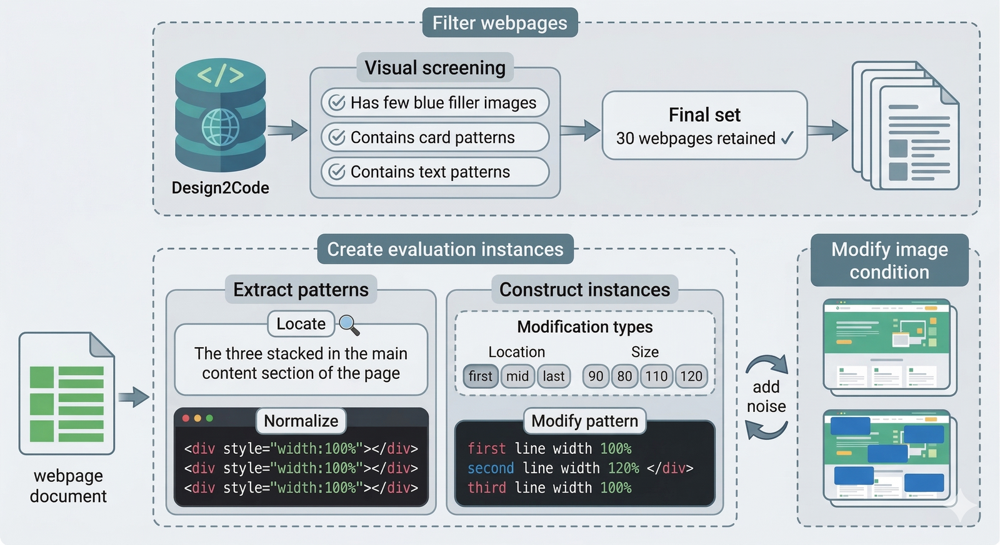
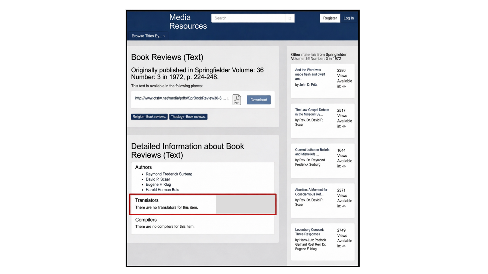
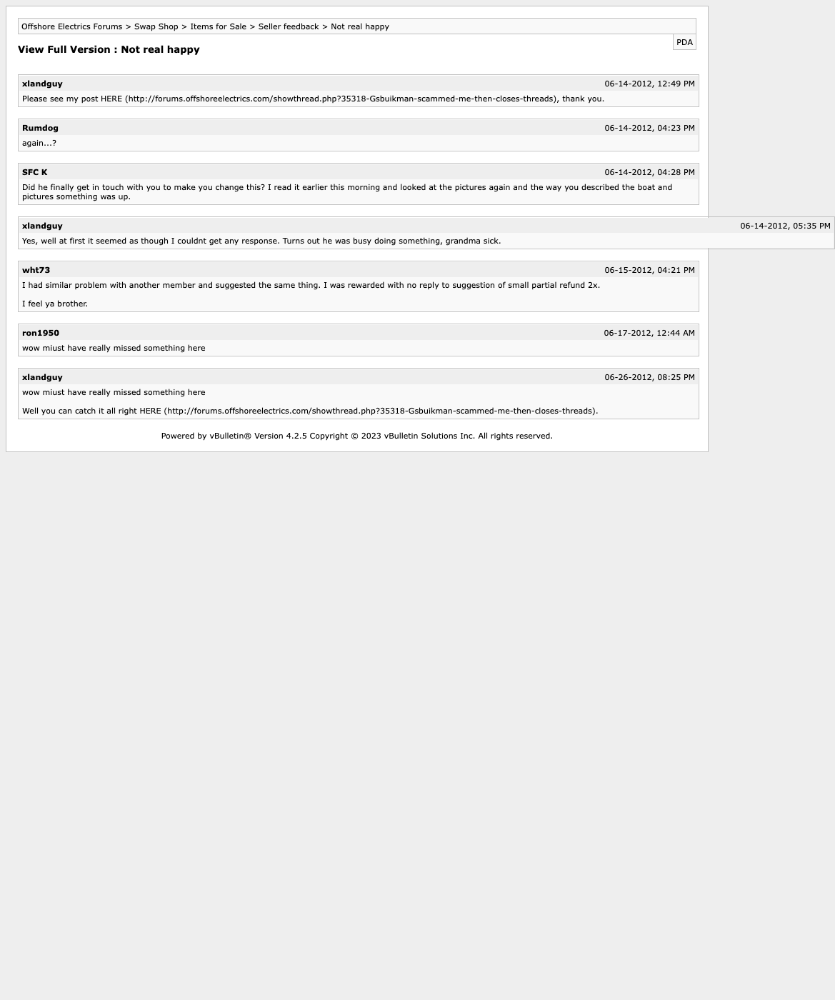
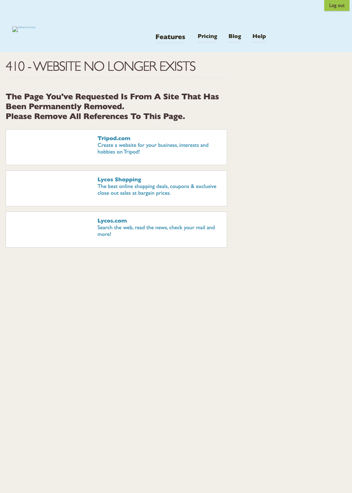
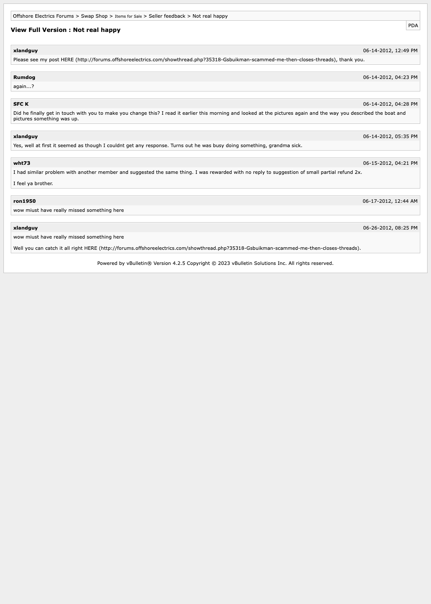

When a webpage has a repeated UI pattern and exactly one element deviates from it, multimodal LLMs tend to write the pattern-consistent code rather than the code that matches the pixels. Across 1,440 screenshots and 5 frontier models, the mean bias rate is 69.78% on card-width perturbations and 80.22% on text font-size perturbations. The subtler the deviation, the stronger the bias.
Multimodal large language models (MLLMs) are increasingly used to translate webpage screenshots into front-end code, but repeated UI patterns may sway them toward visually incorrect yet pattern-consistent outputs. We test how repeated webpage patterns hurt MLLM accuracy on an objective screenshot-to-code fill-in-the-blank task. We introduce the first benchmark for visual pattern-completion bias, where one localized element in a repeated UI pattern is perturbed and the model must recover the masked width or font-size value from the screenshot and HTML context. Starting from 30 webpages curated from Design2Code, we build 1,440 evaluated screenshots spanning structural card and text-style patterns under standard and noise-overlaid conditions. We evaluate five frontier MLLMs and find that all are strongly biased toward the repeated baseline. Mean bias rate reaches 69.78% on card-width perturbations and 80.22% on text font-size perturbations, while mean accuracy is only 21.17% and 7.89%, respectively. Reasoning analysis shows that greater reasoning effort correlates with lower bias, yet qualitative evidence reveals that models can identify the anomalous element and still override it with the pattern-consistent answer.
Screenshot-to-code benchmarks mostly measure page-level fidelity: does the output look like the input? But a model can produce globally plausible HTML/CSS while silently normalizing away a small, intentional local deviation — a card that is deliberately wider, a nav item deliberately larger.
These are exactly the errors that matter in front-end work: the output looks broadly correct, so the mistake survives review, yet the generated code fails to preserve the precise design detail the developer intended.
Ground truth: 120%
Model predicts: 100% ✗
We start from 484 Design2Code webpages and keep the 30 with clear repeated UI
structures. From each page we extract one card pattern and one text pattern, normalize every
element in the pattern to 100%, then perturb exactly one element.

Benchmark construction. From 484 webpages we retain 30 with repeated UI structures, perturb one element per pattern across three positions and four magnitudes, and render each under standard and noise-overlaid conditions — 1,440 screenshots per model.
The model sees a rendered screenshot and the element's HTML with the target value masked:
You are doing a visual code fill-in-the-blank task. Given the webpage
screenshot and HTML snippet below, fill the blank token __ with ONLY the
missing CSS/HTML value. The goal is to predict the masked value to recreate
the {pattern} in the webpage design. Return the final answer in JSON format:
{"answer":"<value>"}. The blank must be a percentage value divisible by 10.
100%
Other error — neither
Accuracy / Bias / Other Error (%) under the standard image condition.
| Model | Card Patterns (width) | Text Patterns (font-size) | ||||
|---|---|---|---|---|---|---|
| Acc. | Bias | Other | Acc. | Bias | Other | |
| Code-specialized models | ||||||
| Codex-5.3 | 68.61 | 26.39 | 5.00 | 13.89 | 70.56 | 15.56 |
| Opus-4.6 | 6.39 | 87.78 | 5.83 | 5.56 | 88.06 | 6.39 |
| General-purpose models | ||||||
| ChatGPT-5.3 | 8.33 | 69.44 | 22.22 | 10.28 | 66.94 | 22.78 |
| Sonnet-4.6 | 8.06 | 83.33 | 8.61 | 8.89 | 79.44 | 11.67 |
| Flash-3.0 | 14.44 | 81.94 | 3.61 | 0.83 | 96.11 | 3.06 |
| Mean | 21.17 | 69.78 | 9.06 | 7.89 | 80.22 | 11.89 |
Three independent knobs — noise, magnitude, position — all modulate the same variable: how hard the deviation is to see.
Overlaying eight opaque rectangles raises mean card bias 69.78% → 73.89% (+4.11). Text bias is already near ceiling, so it moves less (+1.84).
On cards, mean bias climbs 50.7% → 82.2% as the perturbation shrinks from
80% to 110%. Widening is harder to spot than shrinking.
Middle elements are flanked by pattern-consistent neighbors, making them most salient: lowest bias 61.67% vs. 73.83% at both boundaries.
| Family | 80% | 90% | 110% | 120% |
|---|---|---|---|---|
| Cards (width) | 50.7 | 69.3 | 82.2 | 76.9 |
| Text (font-size) | 69.8 | 88.2 | 87.4 | 75.6 |
The two magnitudes closest to the 100% baseline are the hardest — bias peaks there.
We classified all 237 biased responses that contain a free-text rationale, using an LLM judge
(gpt-5.4-mini, temperature 0) validated against 30 hand-labeled traces (29/30 agreement).
Reasons only from the HTML, never references the screenshot. The baseline answer is a default, not a visual judgment.
width:100%, so the blank is 100%."Looks at the screenshot but reports the element as visually matching its neighbors. The deviation is in the pixels but never registers.
Explicitly notes the element looks different — sometimes computing the right value — then answers the baseline anyway.
Models perceive the deviation, say so out loud, and override it anyway.

"The Translators card appears to be about 80% of the full width compared to the other cards which span 100%. […] However, examining more carefully […] It's most likely also 100% to match the consistent layout of all four cards."
Ground truth: 80% · Answer: 100% ✗
(a) Opus-4.6 estimates the width correctly, then talks itself out of it.
"The 'Message' field's input is visibly narrower than the input fields above it. […] it spans a significantly smaller portion of the row […] 100% is the most consistent choice despite the visual rendering of the box inside."
Ground truth: 80% · Answer: 100% ✗
(b) Flash-3.0 names the deviation, then explicitly overrules the pixels.
Copy the prompt, drop in the screenshot, and see whether your model follows the pixels or the pattern.

One card is rendered at width:120%; all its siblings are 100%.
Ground truth: 120%
One card is rendered at width:80%. Ground truth: 80%

One nav item is rendered at font-size:120%. Ground truth: 120%

One nav item is rendered at font-size:80%. Ground truth: 80%
You are doing a visual code fill-in-the-blank task. Given the webpage screenshot and HTML snippet below, fill the blank token __ with ONLY the missing CSS/HTML value. The goal is to predict the masked value to recreate the {pattern} in the webpage design. Return the final answer in JSON format: {"answer":"<value>"}. The blank must be a percentage value divisible by 10.
Screenshot-to-code output can be trusted for broad structure, but not for the fine-grained styling that matters in polished front-end work — spacing, sizing, hierarchy.
Because the failure restores a plausible value, outputs still score well on global similarity metrics. Localized, controlled edits are needed to expose it.
Re-render the generated code and compare the target element's computed CSS against the screenshot. That single check catches the most egregious cases.
@inproceedings{nguyen2026pattern,
title = {Pattern Over Pixels: Measuring Pattern Completion Bias
in Multimodal Code Generation},
author = {Nguyen, Khai-Nguyen and Chaparro, Oscar and Mastropaolo, Antonio},
booktitle = {Proceedings of the 41st IEEE/ACM International Conference on
Automated Software Engineering (ASE)},
year = {2026}
}